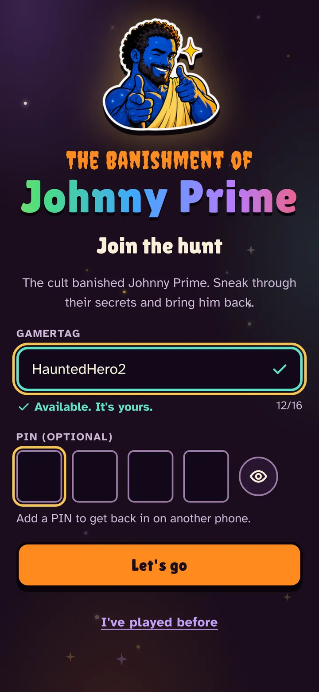
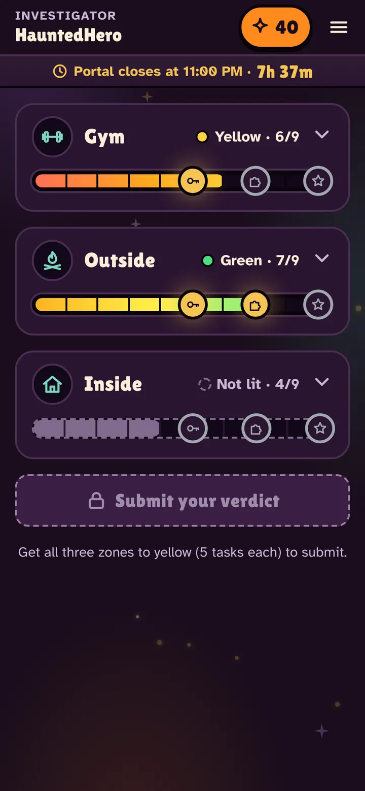
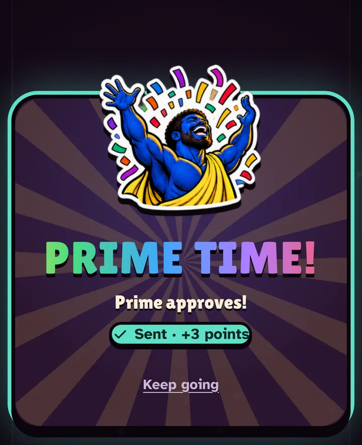
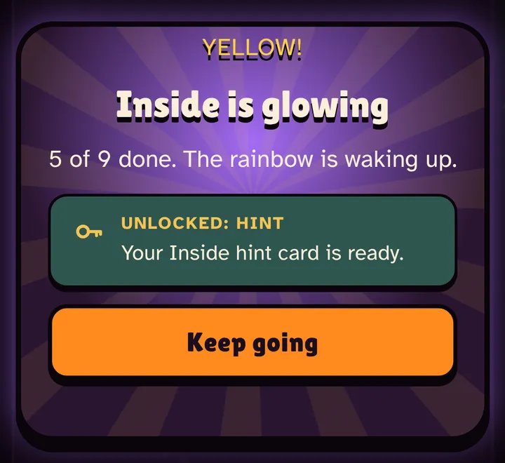
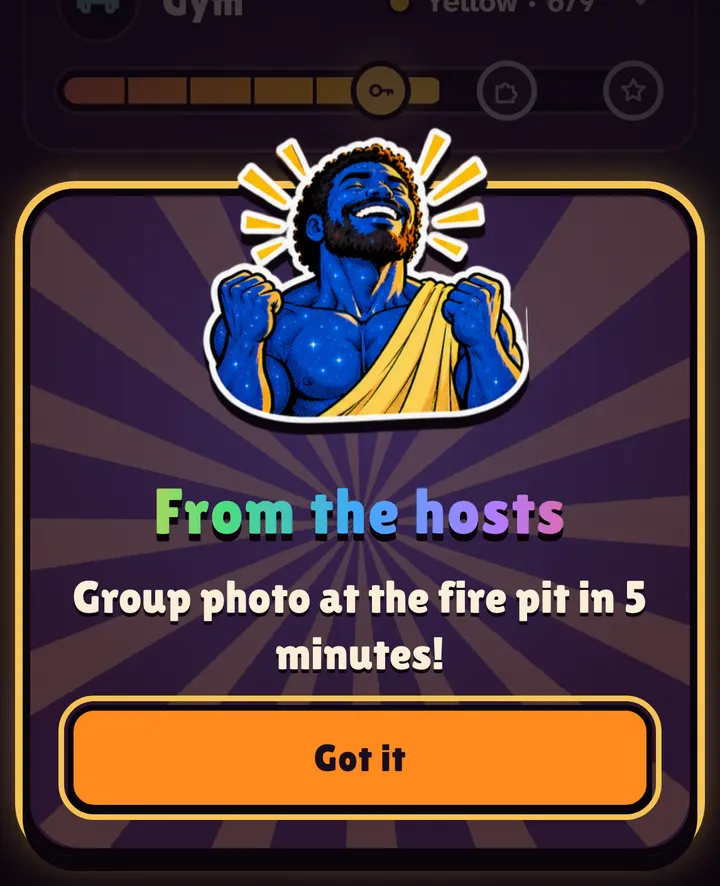
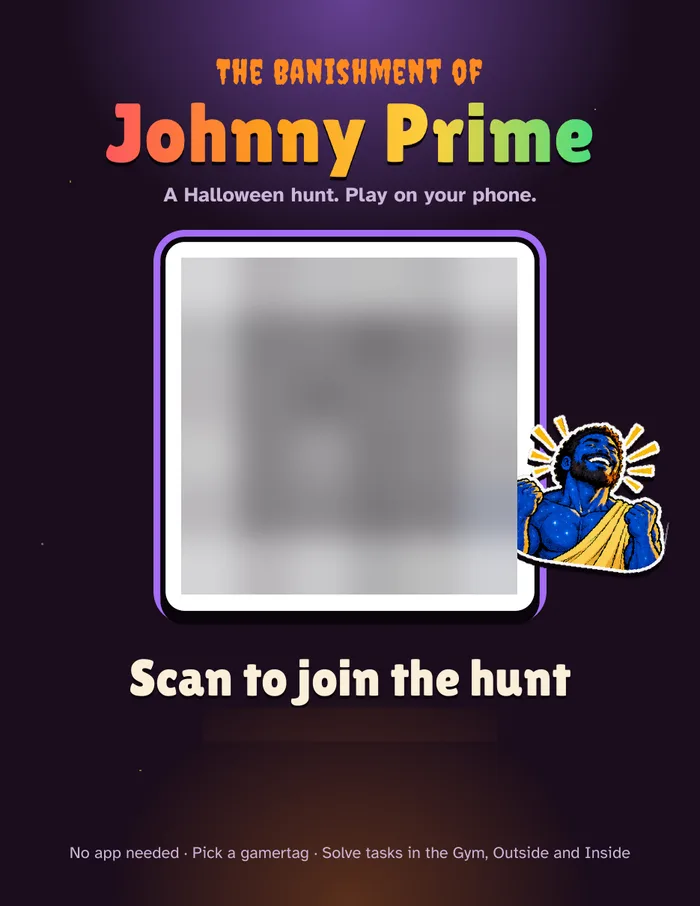
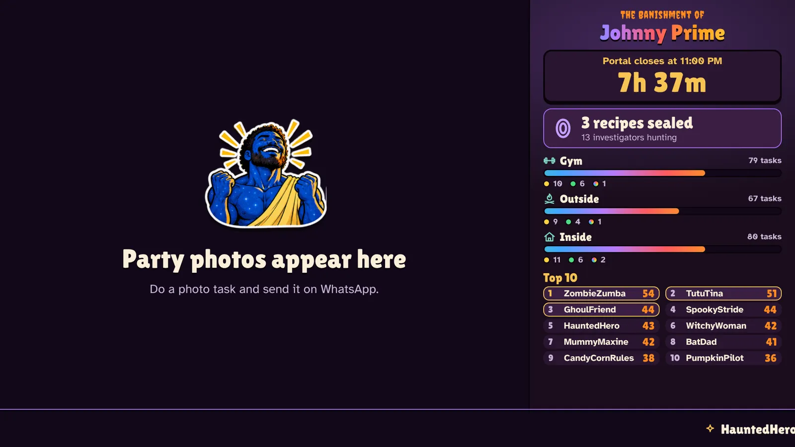

Scan and play
Scan a QR code, pick a gamertag and you're in. No app, no account, no email.
The Banishment of
A custom, in-person party game by City Play Co. We built The Banishment of Johnny Prime for a private Halloween party in St. Pete: a phone scavenger hunt and mystery with 27 tasks across the house, a live leaderboard on the TV, an original cartoon and a group finale. No app needed. We build games like this for corporate events and private parties.
The story: the Whytry Cult banished Johnny Prime into the Cheddar Void. On Halloween night, the party grabbed their phones, lit up the rainbow and brought him back.
The story
Every player started with a title intro and an original cartoon episode, made for this party, that set up the mystery. The credits roll for everyone who helped bring Johnny back.
What we built
Guests played solo on their own phones, all over the house, and everyone gathered for the summoning ritual at 11:11.

Scan a QR code, pick a gamertag and you're in. No app, no account, no email.

27 tasks across the Gym, Outside and Inside: trivia, finds, photo and video challenges, and talk-to-someone-new prompts. Each bar gets more rainbow as you go.

Custom stickers, confetti and game-show sounds on every solve. Wrong answers get the cult's eye roll.

Five tasks in a zone unlock a hint. Seven unlock a piece of the logic puzzle. Green lets you know.

One tap sends a message to every player's phone, and to the big screen.

QR posters and table cards in the game's style, printed straight from the app.

Party photos slide by next to the countdown, the room's progress in every zone, a top 10 and a ticker of who just lit up a zone. It never shows answers.
Built by City Play Co.
City Play Co. makes games that turn real places into play. Johnny Prime was a custom build for a Halloween party: an original cartoon and theme song, a phone game, a live TV board, a host control panel and an in-person finale, all designed around the hosts and their friends.
"Introductions to others you might not otherwise meet. Instant ice breaker."
A player, in the end-of-game survey
More from the night on @cityplayco.
Bring it to your team
Johnny Prime started as one party. The same build works for your people: a story, tasks and inside jokes written about your group, played all over your venue, with a finale everyone shows up for.
Team offsites, holiday parties, onboarding weeks and conference socials. Get people out of their usual circles and talking to colleagues they don't normally meet.
Milestone birthdays, bachelor and bachelorette weekends, and themed parties. A one-of-a-kind game starring the guest of honor.
Questions
It is a custom, in-person party game City Play Co. built for a private Halloween party in St. Petersburg, Florida, on October 31, 2026. Guests played on their own phones: a scavenger hunt and mystery with 27 tasks across three zones of the house, a live leaderboard on the TV, an original cartoon and theme song, and a group summoning ritual as the finale.
Yes. City Play Co. designs bespoke in-person games for corporate team events, offsites, holiday parties and conference socials, and for private celebrations like milestone birthdays and bachelor or bachelorette parties. Each game is built around your people, your venue and your story.
These games can handle up to 100 players. They work best for groups of 20 to 60, where people can meet each other across the room and still feel the energy of the whole group.
No. Players scan a QR code, pick a gamertag and play in their phone's web browser. There is no app, account or email sign-up.
A custom story and characters, tasks and clues written about your group and venue, original intro video and music, a phone game with points, stickers and sounds, a live leaderboard for a TV or projector, a host control panel for announcements and timing, print-ready QR posters, and a finale that brings everyone together.
The Johnny Prime game went from idea to game night in about three weeks. Timing depends on the size of the event and how much custom media you want, so reach out early to plan your date.
Johnny Prime was played solo on each guest's phone, and many guests teamed up and played together on one phone. For team events, the game can be set up around your groups.
City Play Co. is based in St. Petersburg, Florida, and is a brand of Community Play Tools, LLC. To talk about a game for your event, email ryan@communityplaytools.com or message @cityplayco on Instagram.
Halloween night, Saturday, October 31, 2026. The party went outside for the summoning and Johnny Prime came back. Want a game like this for your team or your next big party? Let's talk.